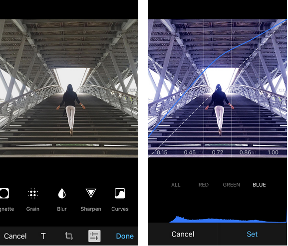

首頁 >
官方新聞 > 頻道：廣播功能洽當地完成了（原文）（最新手機版中文化檔案）
今天我們引進了「頻道」的功能，用於將您的訊息廣播給大量觀眾的一個新工具。頻道取代了舊式廣播清單，並在各方面都更好。頻道可以有人數不受限制的成員，及可以用一個永久網址的方式被公開，並且在頻道中的每則貼文都有它自己的觀看計數器。
從您的訊息中轉寄出去的副本也會被包含在總計數中。最後但並非最不重要的，一旦加入，新成員可以看到頻道中的完整訊息紀錄。（譯者：頻道中的訊息，頻道管理者可以張貼，也可以刪除。刪除後，觀眾也就看不到了！和一般的聊天及群組不同！且每個成員都可以在程式中看到頻道公開的分享連結，並傳送給他人。）
如果您想要一個範例，可以加入我們的官方 Telegram 頻道就可以獲得我們的更新通知，或者您可以嘗試從選單的「新增頻道」中建立您自己的頻道。
頻道功能在今天 iOS 和 Android 和桌面版程式更新中可以取得。所有其他官方程式將很快地就會有這個功能。
iOS9 通知
其它的好消息是，我們加入「從通知中快速回覆」的功能，現在支援 iOS 9 裝置。這意味著您可以從 iPhone 鎖定的螢幕狀態中，直接回覆 Telegram 的訊息。「Split View」及更多 iOS 9 的功能將在十月初變為可用。
不幸的是，由於 iOS9 本身的一個錯誤，目前無法立刻顯示用於快速回覆的輸入欄 - 您需要按著「回覆」按鈕，才能讓它出現。當伴隨著相關錯誤修復的 iOS 9.1發布時，快速回覆功能預期將正常工作。
照片編輯器
iOS 版的程式內照片編輯器進行了更新，帶來調整圖片色調、淡化和曲線的工具。現有的陰影和亮部工具預設值為 50％，且現在被分為兩個各自的功能。

2015年9月22日
電報團隊
PS：在今年秋天結束前，機器人廣播工具將加入機器人 API 中！